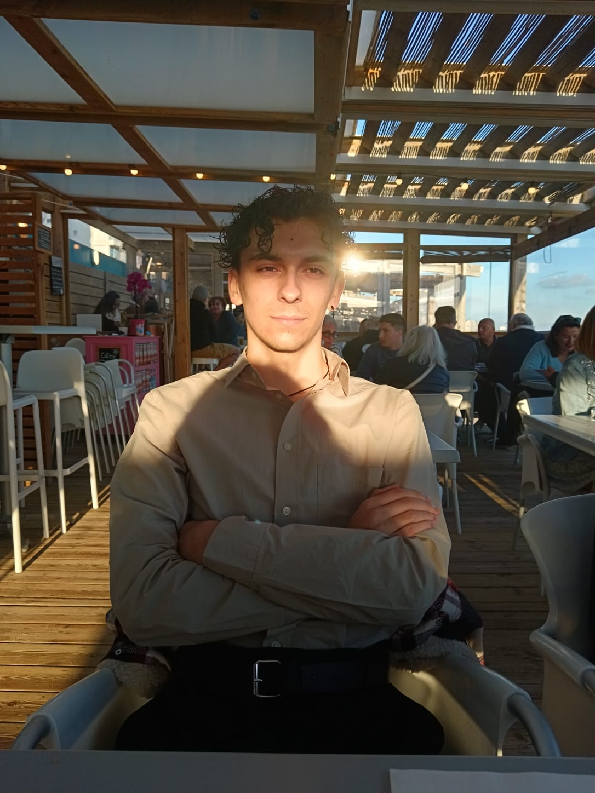

Dorian ADAM
Étudiant en 2ème année de BTS SIO option SLAM au Campus Sainte-Marguerite, je suis passionné par le développement d'applications web et logiciels. J'aime résoudre des problèmes complexes avec du code propre et efficace.
En dehors de mes études, je m’intéresse à tout ce qui peut m’aider à mieux comprendre mon environnement professionnel et à améliorer ma façon de travailler. J’aime explorer, tester, apprendre et avancer étape par étape. Mon objectif est de rejoindre une équipe qui encourage la progression et la prise d’initiative.
Tours, France
adam.dorian37@gmail.com
📱 +33 7 82 14 66 44
Ouvert aux opportunités
0
Projets réalisés
0
Ans de formation
0
Technos maîtrisées
Centres d'intérêt
Développement personnel
Projets side, challenges LeetCode, hackathons — j'apprends en construisant.
Cybersécurité
CTF, OWASP Top 10, bonnes pratiques de sécurité dans le code.
Veille technologique
Dev.to, Hacker News, newsletters — je reste à jour sur l'écosystème web.